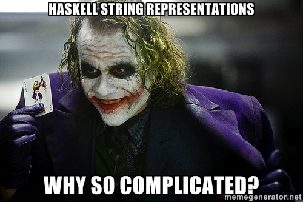

Lost in string representations
by Clement Delafargue on March 4, 2014
Tagged as: haskell, bytestring, text, string.
When you start playing with haskell, handling text is simple: you use String, which is just an alias for [Char]. You have access to the full goodness of Data.List and for a while, you’re in a happy place. The first version of hammertime used strings everywhere.
Soon enough, you learn many operations on String are O(n) and you use Data.Text as a drop-in replacement, and for a while, you’re in a sort of happy place. Hammertime now uses Data.Text for its internal data representations.
I was there, until I’ve started playing more seriously with Snap. Snap is a Haskell web framework and has roughly the same vision as play framework, with the nice addition of the Snaplet mechanism, and the notable lack of typesafe routing. Like play, it’s focused on HTTP, doesn’t come with a gazillion persistence layers and is quite simple to understand (I’m looking at you, yesod). Like play, it’s based on iteratee IO (but this will change in 1.0 to io-streams, which will bring a simpler interface and a performance boost). Its template system, Heist, is really nice (it’s inspired from liftweb’s template system, which was my favourite part of this framework. Yes I’ve used (and liked) liftweb. Don’t judge me).
Long story short, I kinda like snap. Try it out, it’s fun.
Back to the main story. Even though I use Data.Text in my models, snap uses Data.ByteString for the data you extract from requests (path fragments, query string parameters, form data). For more fun, Data.UUID only parses String or Data.ByteString.Lazy. For even more fun, Aeson, the JSON library only handles Data.Text in its AST (but is capable to (de)serialize (from)to Data.ByteString.

Turns out every representation has its uses (Except String. Don’t use String outside of 1HaskellADay one-liners).
String
String is a naive representation of a string. It’s implemented as a linked list of unicode characters and thus most operations on it have linear complexity. It’s unfit for serious use.
Data.Text
Data.Text is a space efficient, unboxed representation for strings (it also provides a lazy version, which is a list of strict chunks). It has extremely good space and time performance thanks to its internal representation and a powerful loop fusion mechanism. Internally, it’s packed utf16.
It’s the representation you should use for your data models.
Data.ByteString and Data.ByteString.Lazy
Data.ByteString is a strict, immutable representation for binary data. It represents sequences of bytes and is suitable for high-performance use. Unlike Data.Text, Data.ByteString does not carry any information about char encoding. That’s why when converting from ByteString to Text, you need to explicitly tell the encoding you want (and handle possible failures).
Data.ByteString.Lazy is the lazy version, for strings too big to fit in memory.
TL;DR
To sum up: Data.Text for readable text with a known encoding. Data.ByteString for high-performance, binary, transfer where you don’t care about the encoding.
Many thanks to @yoeight, @lucasdicioccio, and @BeRewt for helping me out. :)
For a more accurate and exhaustive breakdown of string representations, check out How to pick your string library in Haskell by Edward Z. Yang